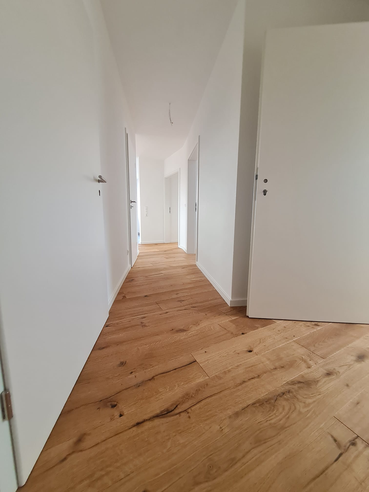
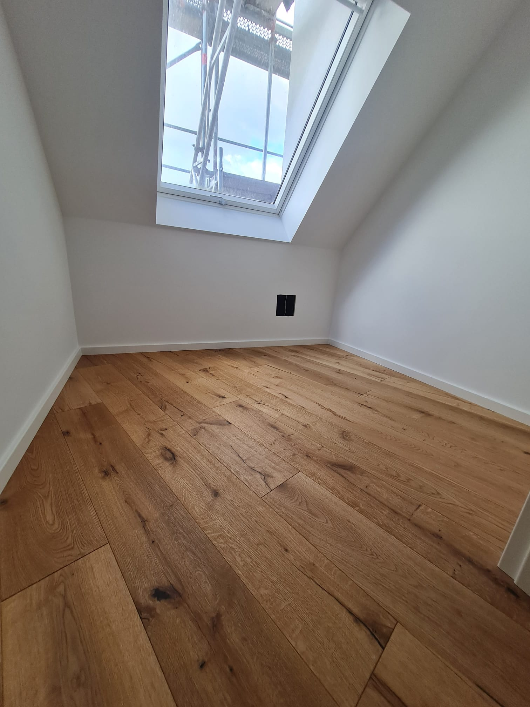

Ausgewählte Projekte
Entdecken Sie unser Portfolio von abgeschlossenen Holzboden-Installationen und Renovierungen.

Eleganter Eichenboden
Premium Eichenboden-Installation mit individueller Oberflächenbehandlung
- Massives Eichenholz
- Individuelle Färbung
- Fischgrätmuster

Klassischer Nussbaumbelag
Traditioneller Nussbaumboden mit modernen Akzenten
- Mehrschicht-Nussbaum
- Matte Oberfläche
- Breite Dielen

Modernes Ahorn-Design
Zeitgenössischer Ahornboden für offene Räume
- Natürlicher Ahorn
- Klarlackversiegelung
- Nahtlose Installation

Rustikaler Kiefernboden
Antik wirkender Kiefernboden für Landhäuser
- Recycelte Kiefer
- Handgehobelte Struktur
- Vintage-Finish

Traditioneller Kirschholzboden
Klassische Kirschholzboden-Installation
- Brasilianisches Kirschholz
- Hochglanz-Finish
- Traditionelles Muster